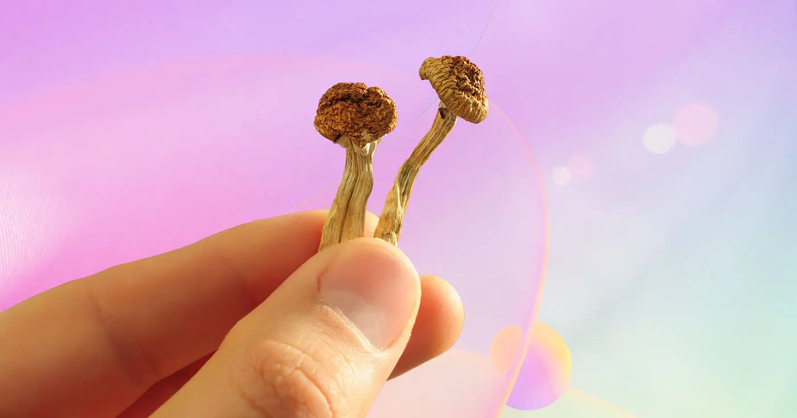
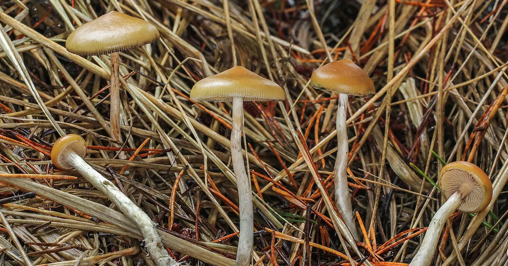

fuentes y más información
referentes
-
Timothy Leary
fue un psicólogo y escritor estadounidense conocido por ser un
fuerte defensor del uso de psicodélicos, en ámbitos recreativos,
espiriturales, terapéuticos y de investigación. Participó en el
Harvard Psilocybin
Project
entre 1960 y 1962, junto a Ram Dass. Escribió
The Psychedelic Experience, una interpretación del Libro Tibetano de la Muerte desde una
perspectiva psicodélica.
-
Ram Dass
fue un psicólogo y gurú espiritual americano, uno de los primeros en
popularizar la espiritualidad oriental en occidente. Conocido como
Richard Alpert, trabajó con Timothy Leary en Harvard en múltiples
proyectos relacionados con el uso de psicodélicos. Para él, su
trabajo con psicodélicos fue un preludio para la exploración
espiritual y la fuente de la conciencia misma; ya que el uso de
estas sustancias fue un catalizador para su búsqueda espiritual de
sentido. En 1967 esta búsqueda lo llevó a India, donde fue discípulo
de Maharaj-ji y Richard Alpert se transformó en Ram Dass. En 1971
escribió
Be Here Now
y participó en la creación de más de una docena de libros sobre
espiritualidad y experiencias psicodélicas.
-
Terence McKenna
fue un etnobotánico y místico americano, defensor del uso
responsable de plantas psicodélicas. Escribió, entre otros libros y
ensayos,
Food of the Gods, una exploración de la relación simbiótica entre los humanos y las
plantas psicoactivas; y, junto a su hermano Dennis, el
Manual de
Cultivo de Hongos Alucinógenos. Desde 1980 habló públicamente sobre psicodélicos y se transformó
en un pionero del movimiento.
-
Paul Stamets
es un micólogo y emprendedor americano, y posee un profundo
conocimiento sobre hongos: su habitat, usos medicinales, producción,
su importancia para el ecosistema global y su relación con la
humanidad. Fundó Fungi Perfecti,
donde vende suplementos y difunde información sobre crecimiento,
producción, beneficios e investigación relacionada con todo tipo de
hongos.
-
Michael Pollan
es un autor que hace treinta años explora y escribe sobre los
lugares donde los mundos humano y natural intersectan; en la comida,
jardines y granjas, y en la mente. Sobre psicodélicos, escribió los
libros
How to change your mind
y
This is your mind on
plants.
difusión

-
DoubleBlind
es una revista digital con información de todas las dimensiones
concernientes a los hongos psilocibios y otros psicodélicos. Se
compromete a representar perspectivas diversas, cubrir temas de
vanguardia y relevancia, reportar de manera precisa y rigurosa;
desde la
historia del consumo de hongos
hasta sus
posibilidades de usos
medicinales
; desde
microdosis
hasta
películas para ver durante el trip.
Ofrecen también
cursos, ejemplares impresos, etc.
-
El Gato y La Caja
es una organización argentina cuyo objetivo es "más ciencia en más
lugares para construir realidades más justas, bellas, libres y para
todes"; que buscan alcanzar a través de Investigación, Comunicación
y Diseño. Dentro de
Un libro sobre drogas
se desarrolla un capítulo específico sobre
psicodélicos
que aporta nociones generales de la experiencia psicodélica desde
múltiples perspectivas.
-
The Ancestor Project
es una comunidad que ofrece educación, ceremonias y apoyo para
psiconautas modernos, enraizados en el respecto y reverencia por la
sabiduría ancestral. Buscan reducir el daño y expandir la
conciencia, facilitando oportunidades de aprendizaje para el apoyo
de la transformación radical y personal en el nombre de la
liberación colectiva.
-
Fungi Academy
es una comunidad educativa que se define como una alianza entre
humanos y fungi, que inspira a virir en equilibrio con los demás y
el ambiente. Ofrecen cursos, eventos e información sobre usos
ceremoniales, sagrados y terapéuticos de hongos psilocibios.
podcasts
-
Tim Ferris es
un emprendedor e inversor que conduce uno de los podcast más
populares del mundo,
The Tim Ferriss Show, en el cual realiza largas
entrevistas a referentes globales de
múltiples temas. Uno de los temas que explora con frecuencia es el
de
psicodélicos, siendo algunos de los
episodios al respecto:
-
#440
Rick Doblin — The Psychedelic Domino That Tips All Others
-
#313
Michael Pollan — Exploring The New Science of Psychedelics
-
#377
Psychedelics — Microdosing, Mind-Enhancing Methods, and More
-
#104
Are Psychedelic Drugs the Next Medical Breakthrough?
-
#340
Paul Stamets — How Mushrooms Can Save You and (Perhaps) the
World
-
#300
Jack Kornfield — Finding Freedom, Love, and Joy in the Present
-
Duncan Trussell
es un escritor y comediante que conduce un podcast de entrevistas
Duncan Trussell Family Hour, en el cual explora multiplicidad de
temas junto a sus invitados, en particular sobre uso de psicodélicos
y budismo. Su estilo es particular y a veces escuchar los episodios
puede parecer una experiencia psicodélica en sí misma. Algunos
episodios sobre psicodélicos incluyen:
-
Ram Dass,
Roshi Joan Halifax & Raghu Markus
-
#241
Raghu Markus
-
#239
Dennis Mckenna
-
#192
Rick Doblin
-
#211
Shane Mauss
-
#138
Alex and Allyson Grey
-
Ram Dass Here and Now
Podcast
es un podcast realizado por Raghu Markus a través del cual comparte
charlas, clases, seminarios desarrollados por Ram Dass, explorando
el camino espiritual, la conciencia, la articulación occidental de
filosofía oriental, etc.
-
The Joe Rogan
Experience
es un podcast conducido por Joe Rogan que se caracteriza por sus
largos episodios donde entrevista personalidades del mundo del
deporte, comedia, negocios, arte, entre otros. Algunos de sus
episodios relacionados con la experiencia psicodélica son:
investigación

-
La
Johns Hopkins University
fue y sigue siendo una de las principales instituciones
comprometidas con la investigación y desarrollo de terapias basadas
en el uso seguro de psicodélicos. Tienen un centro específico, el
Center for Psychedelic and Consciousness
Research
donde los investigadores se dedican a entender cómo los psicodélicos
afectan el comportamiento, el humor, la cognición, el funcionamiento
del cerebro e indicadores biológicos de salud.
-
Imperial College London
es una prestigiosa universidad pública británica dedicada a la
investigación, que cuenta con un departamento específico para
investigación de psicodélicos,
Centre for Psychedelic
Research, enfocado en el potencial clínico del uso de psicodélicos, en
particular como tratamiento para trastornos depresivos.
-
NYU Langone Health
es uno de los principales centros médicos de Estados Unidos, y posee
un centro especializado
Center for Psychedelic Medicine,
dedicado a investigar tratamientos con psicodélicos para
pacientes con problemas de adicciones y otros trastornos
-
La
Berkeley University, basada en California, tiene el
Center for the Science of Psychedelics
dedicado a explorar los psicodélicos como herramienta para entender
el cerebro y la mente, con el objetivo de desarrollar bienestar y
profundizar en la espiritualidad.
-
La
Multidisciplinary Association for Psychedelic Studies
es una organización sin fines de lucro que, a través de
investigación y educación, desarrolla contextos médicos, legales y
culturales para que las personas puedan beneficiarse del uso seguro
y sensato de psicodélicos y marihuana.